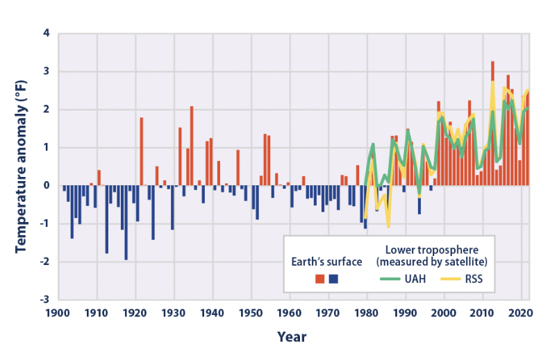

9 UHI Policy
9.1 Summary
9.1.1 What are Heat Islands?
Urban areas, where these structures are highly concentrated and greenery is limited, become “islands” of higher temperatures relative to outlying areas. These pockets of heat are referred to as “heat islands.” City temperatures are often higher than those of nearby rural areas.
9.1.2 Causes of UHI effect
Reduced Natural Landscapes in Urban Areas. Urban Material Properties. Urban Geometry. Heat Generated from Human Activities. Weather and Geography.

9.1.3 Challenges NYC Face
The New York City Panel on Climate Change (NPCC) projects up to a 5.7°F increase in New York City (NYC) average temperatures and a doubling of the number of days above 90°F by the 2050s.

New York City faces many social, environmental, economic and infrastructural risks due to the heat island effect.

9.2 Application
9.2.1 New York policys
OneNYC 2050 Volume 7 (2019) - Goal: A LIVABLE CLIMATE - INITIATIVE 21: New York City is making changes to its physical environment to promote resiliency and mitigate the most dangerous and destructive climate impacts. Such as wetland and forest restoration, to stabilize shorelines, reduce erosion, act as carbon sinks, and mitigate urban heat island effects.
Securing Our Future: Strategies for New York City in the Fight Against Climate Change (2020) - Goal: Achieve cooling equity and reduce heat-related deaths - Key strategy: Increase cooling assistance for vulnerable populations
Cool Neighborhoods NYC (2017) - Cool Neighborhoods NYC Monitoring Strategies: Collecting Innovative Data to Deliver Inclusive and Health-focused Climate Policy
9.2.2 International policys
United Nations New Urban Agenda (2015) -Point 54 :Reducing the … air pollution, urban heat island effects and noise.
Universal Sustainable Development Goals (2015), SDG 11 Issue Brief (2018) -Goal 11: Make cities and human settlements inclusive, safe, resilient and sustainable. -Cleaner,greener cities: Investing in parks and green spaces in urban areas will help to amelioratethe urban heat island effect and improve air quality in urban spaces.
Sendai Framework for Disaster Risk Reduction 2015-2030 (2015) - Expected outcome: The substantial reduction of disaster risk and losses in lives, livelihoods and health. - Target 7 : Substantially increase the availability of and access to multi-hazard early warning systems and disaster risk information and assessments to people by 2030.
9.3 Reflection
Studying the policies implemented by major international cities to mitigate urban heat island (UHI) effects has provided me with valuable insights on how urban environments can be managed sustainably. Through my research, I have learned that various UHI mitigation strategies have been implemented, including increasing vegetation cover, promoting green roofs and walls, and improving urban design to enhance ventilation and reduce heat absorption.
One of the key takeaways from my research is the importance of interdisciplinary collaboration and community engagement in UHI mitigation efforts. Successful UHI mitigation requires the participation and cooperation of various stakeholders, including urban planners, policymakers, and community members.
Furthermore, I have also realized the importance of considering the unique social, economic, and environmental contexts of each city when designing and implementing UHI mitigation strategies. Effective UHI mitigation requires a tailored approach that addresses the specific needs and challenges of each city.
References:
9.1.4 Social impacts
Heat is the NO.1 weather-related killer in the US (NOAA, 2016). Every year, NYC experiences an average of 450 heat-related emergency department visits, 150 heat-related hospital admissions, and 13 heat-stroke deaths. The City also averages about 115 excess deaths from natural causes exacerbated by extreme heat annually (Matte et. all, 2016).